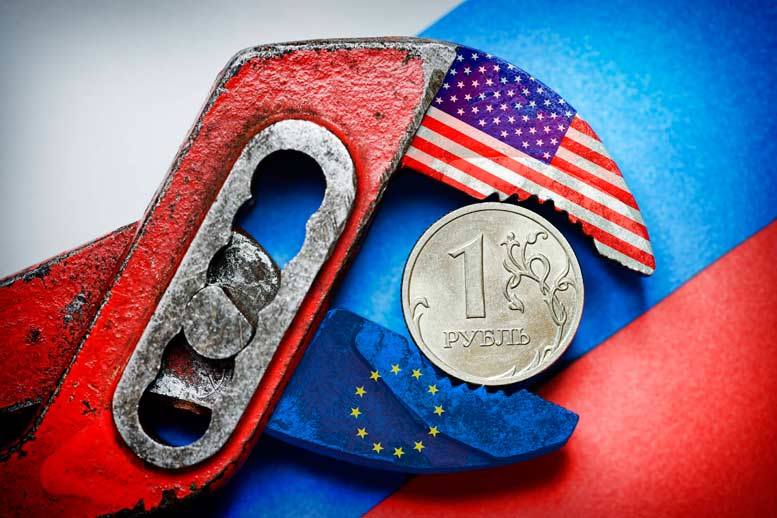

Является ли Россия
империалистической страной?
Канд. экон. наук В.Галко

Идущая среди марксистов дискуссия, является ли Россия империалистической страной, имеет не только теоретическую и познавательную сторону. От решения этого вопроса зависят политические выводы и практические действия.
Для того, чтобы разобраться в этой проблеме, рассмотрим научные положения об империализме, раскрытые и обоснованные Лениным в работе «Империализм как высшая стадия капитализма». Прежде всего, как отмечает Ленин, «по своей экономической сущности империализм есть монополистический капитализм» (Ленин В.И. Полн. собр. соч., т. 27, с. 420).
Монополистический капитализм является стадией развития капитализма, он вырос из капитализма свободной конкуренции. На основе концентрации и централизации производства образуются монополии, такой же процесс идет и среди банков, происходит сращивание, слияние промышленных и банковских монополий и, таким образом, образуется финансовый капитал и финансовая олигархия. Приобретает выдающееся значение вывоз капитала. Концентрация и централизация доходят до такого уровня, что образуются монополистические союзы, кучка сильнейших государств поделила мир и ведет борьбу за его передел.
Мир капитала вступил в монополистический капитализм на рубеже ХIX–XX веков и с тех пор находится в этой фазе. И сегодня все страны мира капитала, иначе говоря, встроены в империализм, являются его составными частями. Но роль их в мировой системе империализма различна.
Монополистической стадии капитализма свойственно деление стран на небольшую горстку империалистических разбойников и большую группу зависимых стран, эксплуатируемых и угнетаемых этими империалистическими хищниками.
Если в какой-то стране нет своих монополий, то это нисколько не означает, что их нет вообще, и данной стране присуща домонополистическая стадия капитализма. Просто в данной стране хозяйничают американские и западноевропейские монополии.
Как отмечает Ленин, «капиталисты делят мир не по своей особой злобности, а потому, что достигнутая ступень концентрации заставляет становиться на этот путь для получения прибыли; при этом делят они его «по капиталу», «по силе» — иного способа дележа не может быть в системе товарного производства и капитализма. Сила же меняется в зависимости от экономического и политического развития» (Указ. соч., т. 27, с. 372 – 373).
В условиях капитализма действует закон неравномерности экономического и политического развития, в результате чего появляются новые «игроки» на поле, выдвигаются новые империалистические державы, другие уходят в тень, происходит изменение соотношения сил империалистических держав, их группировок, критерием которого является экономическая, политическая, военная мощь государств.
После уничтожения социализма в СССР и реставрации капитализма Россия оказалась в капиталистическом лагере, а он находится в стадии монополистического капитализма. И никакого другого капитализма сегодня нет. Для того чтобы ответить на вопрос, какое место занимает Россия в империалистической системе, рассмотрим, присущи ли России признаки империализма.
Первый признак — концентрация производства и образование монополий. При этом необходимо учитывать особенность российского капитализма, а именно: он возник не из феодализма, а как отрицание социализма. А социализму имманентно присуще крупное обобществленное производство.
В ходе реставрации капитализма в стране крупнейшие заводы либо были полностью разрушены, либо сократили производство в десятки раз, либо были раздроблены на мелкие кусочки. Перестали существовать такие промышленные гиганты, как Автомобильный завод Ленинского комсомола (АЗЛК), Автомобильный завод имени Лихачева (ЗИЛ), низведен до уровня среднего предприятия Кировский завод.
Тенденция разрушения не остановлена и продолжает преобладать и сегодня. Объем промышленного производства в стране так и не достиг уровня 1990 г. и находится в пределах 80% от него, а в ряде ключевых отраслей — например, производстве металлорежущих станков, составляет считанные проценты.
Капитализм и присущая ему форма производства, как и любой другой общественный организм, любой предмет, явление в природе или обществе также развивается. Он зарождается, проходит определенные ступени своего развития и, в конце концов, преходит, и его сменяет более высокая общественно-экономическая формация.
Этапы развития капиталистического производства, а оно, как известно, есть та стадия развития товарного производства, когда рабочая сила становится товаром, и методы его саморегулирования определены действием внутренне присущих ему экономических законов. Первоначальный этап развития капитализма — так называемый капитализм свободной конкуренции. Его саморегулирование — рыночное, осуществляемое на основе закона стоимости посредством конкурентной борьбы.
Дальнейшее развитие капитализма идет от этой простой, низшей формы к более сложной, более высокой — монополистическому капитализму. На смену рыночному саморегулированию приходит регулирование экономики монополиями. Осуществляется оно монополиями, прежде всего через механизм монопольно высоких и монопольно низких цен. При этом правомерно говорить о подрыве товарного производства на монополистической стадии развития капитализма.
В дальнейшем в регулирование экономики все больше включается государство. Современному капиталистическому производству имманентно регулирование экономики монополиями и государством.
Такое развитие капиталистического саморегулирования — не желание или прихоть каких-то представителей господствующего класса, а результат объективного процесса развития капитализма, в основе которого лежит усиление его общественного характера, углубление обобществления производства, усиление его концентрации и централизации.
Поскольку противоположные стороны и тенденции объективно существуют в экономике, соответственно есть носители этих тенденций. Среди правящего класса капиталистов в России верх взяла компрадорская буржуазия, у представителей которой господствует одна идея: «урвать побольше» за счет уничтожения отечественного производства в угоду империалистическим странам. По сути, это лоббирование интересов иностранных монополий.
Параллельно идет и противоположная тенденция — образование монополий. Примеры: Газпром, Роснефть, Лукойл, Норильский никель и др. Особенность создания монополий в России — в подавляющей части они сырьевой направленности или затрагивают первичную обработку сырья, что характеризует отсталый, сырьевой, зависимый от развитых стран тип экономики.
Ожесточенная конкурентная борьба заставляет коллективного российского капиталиста объединять некоторые производства и таким путем создавать достаточно крупные промышленные предприятия — Объединенную судостроительную корпорацию, Объединенную двигателестроительную корпорацию, Объединенную авиастроительную корпорацию и др. Но при этом постоянно оговариваются, что это вынужденные меры и т.п.
Теперь по вопросу наличия в России банков и банковских монополий. Не всё золото, что блестит. Во-первых, с большой натяжкой российские банки можно назвать банками. По определению банки — это такие капиталистические предприятия, которые аккумулируют временно свободные в хозяйственном обороте денежные средства и направляют их тем предприятиям, которые испытывает временный недостаток в денежных средствах, способствуя развитию производства. В сегодняшней России банки больше содействуют удушению и уничтожению производства. Нынешняя средняя ставка кредитов юридическим лицам составляет 14% (по данным сайта Центрального банка России по состоянию на сентябрь 2015 г.), что, конечно, лучше 240–250% первой половины 90-х годов или даже 20–25% несколькими годами раньше. Но достичь нормального уровня рентабельности, инвестировать и развивать производство при таких ставках невозможно.
Ставка рефинансирования в развитых капиталистических странах сейчас около 0% или незначительно превышает его. Логика действий руководства этих стран — поддержать низкой ставкой банковского процента производство, стимулировать его развитие. Что делает буржуазное государство в России? Наоборот, поднимает ключевую ставку до 17% (снижение до 11% принципиальной роли не играет). Повышение ключевой ставки ведет к росту цены кредитов коммерческих банков и тем самым загоняет в тяжелейшую финансовую ситуацию функционирующих капиталистов и фактически ставит крест на развитии экономики.
Ключевая ставка — это не так давно введенный инструмент, ставка, по которой ЦБ РФ фактически предоставляет денежные средства коммерческим банкам. В то же время существует не отмененная ставка рефинансирования, размер которой сохраняется 8,5%, но которая потеряла свою регулирующую роль. Произошел отрыв формы от содержания аналогично тому, что есть прожиточный минимум, который в 1 квартале 2015 г. составил 9662 рублей, и минимальный размер оплаты труда, который вроде как не должен быть ниже прожиточного минимума, тем не менее, его размер с 01.01.2015 г. составляет всего 5965 рублей.
Весьма спорным является и утверждение о наличии в стране банковских монополий. Несомненно, процесс концентрации и централизации в банковской сфере России идет быстрым темпом. Так, если в начале 90-х годов в стране было 2,5 тысячи банков, то сегодня их осталось менее 800. Но при этом активы всей банковской системы России гораздо меньше активов одной крупной западной банковской монополии. Активы всех российских банков на 01.09.2015 г. составляли 78,4 трлн. рублей, или приблизительно 1,2 трлн. долларов США. Активы таких американских банковских монополий, как JPMorgan Chase, Bank of America, английской HCBC Holdings, французской BNP Paribas, немецкой Deutsche Bank, превышают 2 трлн. долларов у каждой. Активы крупного по российским меркам банка в 100 – 1000 раз (!) меньше активов любого крупного западного банка
Имеют место две тенденции. Первая — удушение российскими ростовщическими конторами с названием «банки» промышленных предприятий, что чрезвычайно сдерживает их развитие. Другая тенденция — усиление контроля иностранными банковскими монополиями российских промышленных монополий. Внешний долг российского частного сектора — 279,1 млрд. долларов. Причем долг небанковских компаний вырос за 10 лет в 3,5 раза с 65,4 млрд. долларов на 01.01.2005 г. до 228,1 млрд. долларов на 01.07.2015 г., что в рублевом эквиваленте составляет 14,8 трлн. рублей. Для сравнения остаток ссудной задолженности юридических лиц в крупнейшем российском банке — Сбербанке — составляет 10,7 трлн. рублей.
Данная внешняя задолженность сформировалась не за счет кредитов каким-либо ООО «Ромашка» или «Лютики». Это задолженность крупнейших российских компаний, а их кредиторами являются, в первую очередь, крупнейшие банки империалистических государств. Например, среди кредиторов Газпрома — такие банки, как «Бэнк оф Америка Секьюрити Лимитед», «Дойче Банк АГ», «Д.П.Морган Юроп Лимитед», «Королевский Банк Шотландии АГ», «Сумитомо Митцуи Бэнкинг Корпорэйшн Юроп Лимитед».
При этом для зарубежных банков вся подноготная Газпрома, как на ладони. Достаточно только посмотреть на перечень документов, которые любой ссудозаемщик обязан предоставить банку-кредитору. Это свидетельствует, во всяком случае, если не о слиянии иностранных банковских монополий с российскими сырьевыми монополиями, то о контроле, а через него подчинении российского капитала иностранному финансовому капиталу.
Один из признаков монополистического капитализма — преобладание вывоза капитала над вывозом товаров. А что имеем в России? Во-первых, преобладает экспорт товаров и услуг. Во-вторых, в России вместо вывоза капитала в массе своей имеется вывод капитала. Вывоз капитала в политикоэкономическом смысле есть вывоз стоимости с целью получения прибавочной стоимости. Иначе говоря, если российская монополия строит или покупает завод за рубежом, и в результате функционирования этого завода, эксплуатации наемных рабочих получает прибыль, то это есть вывоз капитала. Вывод капитала имеет место, если российское предприятие выводит за рубеж прибыль, полученную на территории России из прибавочной стоимости, созданной российскими рабочими, или наряду с прибылью выводится часть амортизационных отчислений и часть заработной платы наемных рабочих. Эта прибыль концентрируется в офшорах в центрах концентрации прибыли российских капиталистов. И далее, кстати, часто возвращается в Россию, но под видом иностранных инвестиций, но это вывоз капитала из офшора в Россию, если при этом организуется предприятие.
Принцип функционирования российской экономики получается следующий: из страны вывозятся товары (в подавляющем большинстве сырье и минералы), за которые страны-импортеры «платят» в иностранной валюте, но которая в значительной массе перечисляется на счета офшорных или российских компаний, открытых в иностранных банках. То есть эти денежные средства в громадных суммах не доходят до России. Получается поток в одну сторону. Во-вторых, из России в массовом размере выводится прибыль российских предприятий, часть амортизационных отчислений и заработной платы рабочих. По некоторым оценкам за 20 лет из страны вывели более 2 трлн. долларов США, то есть сумму, достаточную для полной реконструкции экономики.
Центральный банк РФ вместо активной борьбы с выводом денег из страны в офшоры только фиксирует этот факт как сторонний наблюдатель. Так, в очередной раз констатируется, что в 2014 г. из России вывели более 150 млрд. долларов США.
Экономический и территориальный раздел мира крупнейшими монополиями, союзами империалистов. Пользуясь отсутствием сдерживающего фактора в лице СССР монополии, американские, прежде всего, пошли в наступление, осуществляя захват новых рынков сырья и сбыта. Идет ожесточенная конкурентная борьба, в которой, как представляется, на сегодня процесс «отжимания» у российского капитала рынков сырья и сбыта доминирует.
Россия за 25 лет потеряла значительное влияние в странах так называемого постсоветского пространства (Прибалтика, Грузия), после организованных при поддержке США государственных переворотах — в Ираке, Ливии, на Балканах. Возьмем последние события на Украине. Используя уже опробованный в других странах фашизм на экспорт, США и находящиеся с ними в одной связке западноевропейские империалистические страны совершили государственный переворот на Украине. Как следствие мы видим повсеместный уход из Украины российского капитала, на место которого приходят американские и западноевропейские конкуренты. Товарооборот между Россией и Украиной упал в разы и продолжает падать.
До российских капиталистов и государства как комитета по делам буржуазии вроде как стало доходить, что могут потерять все, включая независимость страны. Стали активнее огрызаться. Результат — крайне резкое обострение противоречий и борьбы за сферы влияния.
Подведем краткий итог. Процессы монополизации в российской экономике идут, но сказать, что Россия сформировалась как империалистическая держава, было бы большой натяжкой.
Ленин отмечал: «при капитализме немыслимо иное основание для раздела сфер влияния, интересов, колоний и пр., кроме как учет силы участников дележа, силы общеэкономической, финансовой, военной и т.д. А сила изменяется неодинаково у этих участников дележа, ибо равномерного развития отдельных предприятий, трестов, отраслей промышленности, стран при капитализме быть не может» (указ. соч., т. 27, с. 417).
Развитие производства в России выгодно рабочему классу. Разумеется, более высокоорганизованное производство, а таковым является государственно-монополистическое производство, есть полнейшая материальная подготовка социализма. «Монополия, вырастающая на почве свободной конкуренции и именно из свободной конкуренции, есть переход от капитализма к более высокому общественно-экономическому укладу» (указ. соч., т. 27, с. 420 – 421).
|